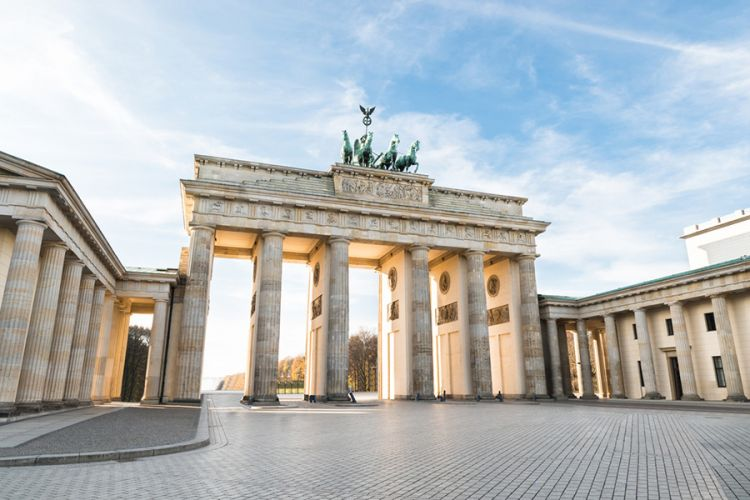
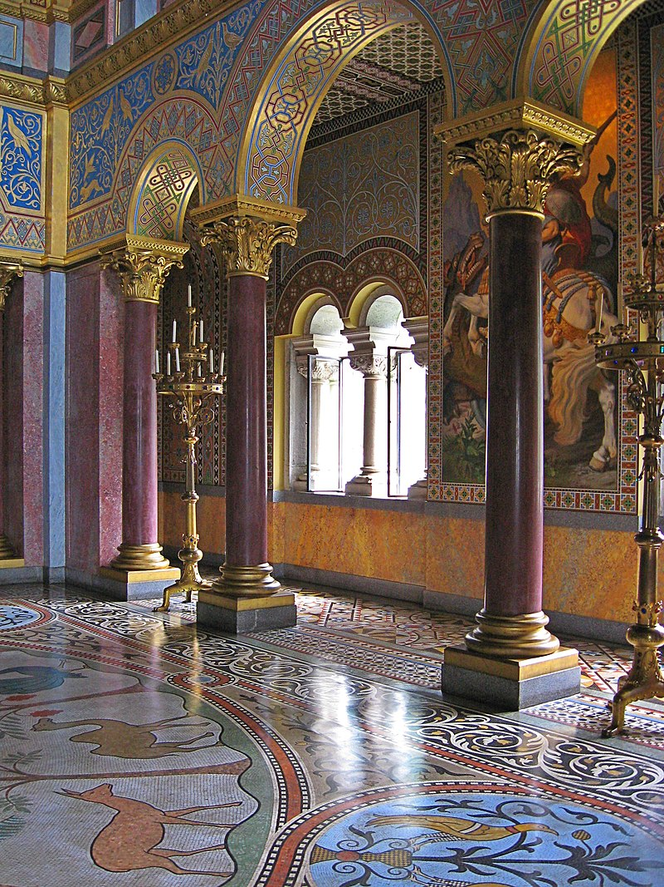
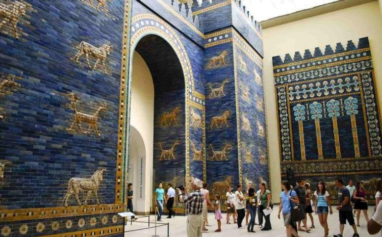
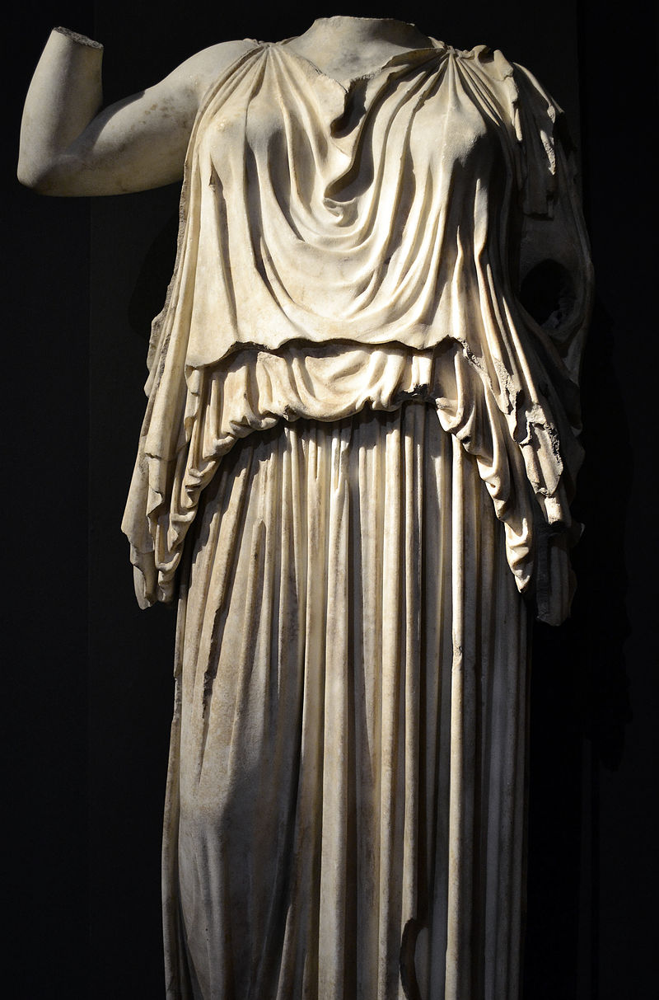
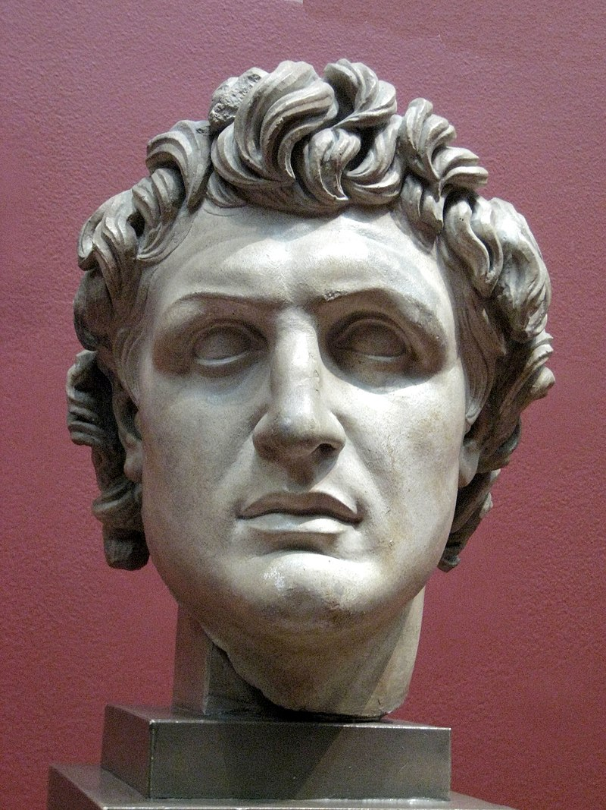
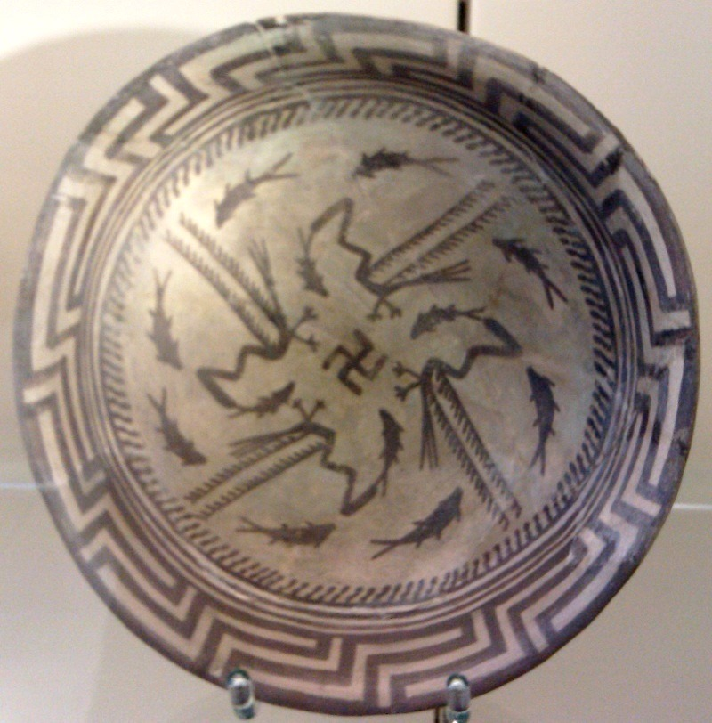
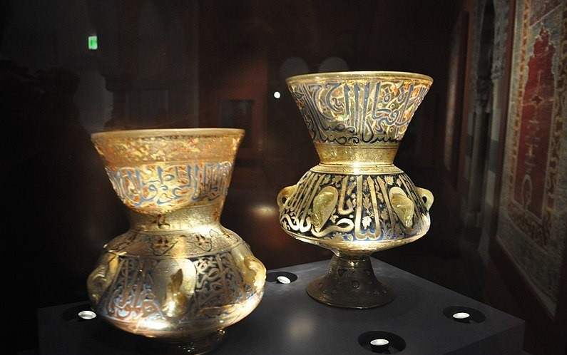

is a country in Central Europe. It is the second most populous country in Europe after Russia,and the most populous member state of the European Union. Germany is situated between the Baltic and North seas to the north, and the Alps to the south;it covers an area of 357,022 square kilometres (137,847 sq mi), with a population of over 83 million within its 16 constituent states.Germany borders Denmark to the north,Poland and the Czech Republic to the east, Austria and Switzerland to the south, and France, Luxembourg, Belgium, and the Netherlands to the west.The nation's capital and largest city is Berlin, and its financial centre is Frankfurt; the largest urban area is the Ruhr.
Various Germanic tribes have inhabited the northern parts of modern Germany since classical antiquity . A region named Germania was documented before AD 100.In the 10th century, German territories formed a central part of the Holy Roman Empire. During the 16th century, northern German regions became the centre of the Protestant Reformation.Following the Napoleonic Wars and the dissolution of the Holy Roman Empire in 1806, the German Confederation was formed in 1815. In 1871, Germany became a nation-state when most of the German states unified into the Prussian-dominated German Empire. After World War I and the German Revolution of 1918–1919, the Empire was replaced by the semi-presidential Weimar Republic.
The Nazi seizure of power in 1933 led to the establishment of a dictatorship, World War II, and the Holocaust. After the end of World War II in Europe and a period of Allied occupation,Germany was divided into the Federal Republic of Germany, generally known as West Germany, and the German Democratic Republic, East Germany. The Federal Republic of Germany was a founding member of the European Economic Community and the European Union, while the German Democratic Republic was a communist Eastern Bloc state and member of the Warsaw Pact. After the fall of communism, German reunification saw the former East German states join the Federal Republic of Germany on 3 October 1990—becoming a federal parliamentary republic.
Germany is a great power with a strong economy; it has the largest economy in Europe,the world's fourth-largest economy by nominal GDP, and the fifth-largest by PPP. As a global leader in several industrial, scientific and technological sectors, it is both the world's third-largest exporter and importer of goods. As a developed country, which ranks very high on the Human Development Index,it offers social security and a universal health care system, environmental protections, and a tuition-free university education. Germany is a member of the United Nations, NATO, the G7, the G20, and the OECD. It has the third-greatest number of UNESCO World Heritage Sites.
Berlin region of Germany . It took this name from a complex of five world-famous museums, namely the " Bode Museum ", the " Pergamon Museum ", the " Modern Museum ", the " National Heritage Gallery " and finally the " Old Museum ". And the sixth to open in 2019 "Humboldt Forum".
Museum Island in Berlin is the largest concentration of art galleries in the world, and was included by UNESCO in 1999 on the list of human heritage . The museums of this island contain the heritage of successive generations and eras that are more than 6000 years old .
One of the most famous exhibits of the Berlin Museum is the Nefertiti statue

Brandenburg gate
The Brandenburg Gate ( German : Brandenburger Tor ) is the symbol of the city of Berlin, and the gate bears the name of the state of Brandenburg that surrounds the state of Berlin and is located in Pariser Square . Its construction began in 1788 and ended in 1791 , but part of it was destroyed in World War II and then the broken part was rebuilt again.
Whereas the only remaining gate from the city of Berlin previously represented the division of the city into East and West Berlin, since the fall of the Berlin Wall in 1989 the Brandenburg Gate has come to symbolize German unity. In addition, this gate made of sandstone is one of the finest examples of German classicism. The Brandenburg Gate was built according to plans by Carl Gotthard Longans from 1788 to 1791, modeled on the propylene of the Acropolis of Athens . On either side, six Doric columns support a radial beam about 11 meters deep, which is divided into five portals. In 1793, a quadriga (a carriage drawn by four horses) designed by Johann Gottfried Schadow was placed on the gate, pointing east towards the city centre.
In light of a decision taken by the Berlin Senate, since October 2002 the Brandenburg Gate has been closed to traffic, including buses and taxis
naming
ancient palace located in southern Germany , near Hohenschwangau and Füssen in southwestern Bavaria , not far from the Austrian border . Neuschwanstein is the most famous castle of Ludwig II and one of the most famous tourist attractions in Germany. It is visited by about 1.5 million tourists annually. Often referred to as the "fairytale castle", Neuschwanstein is open to visitors nearly all year round. The architecture and interior design are influenced by the romantic eclecticism of the 19th century and the castle is considered one of the most important historical works. Three of the Ludwijk castles (Neuschwanstein, Linderhof and Hirenchemsee) have been added to the UNESCO World Heritage List. The palace was built in 1869 for Bavarian King Ludwig II as an ideal idea for a medieval knight's castle. Designed by Christian Jank, and built by Eduard Riedel and Georg von Dollmann. The king lived only a few months in the castle, and died before construction was completed. characters of the composer Wagner . The palace is said to be the most photographed building in the world and is one of Germany 's most famous landmarks . The palace symbol, the swan, has many other meanings, as it was the heraldic symbol of the Counts of Schwangau, to whom the king considered himself the successor. At the same time the swan is the Christian symbol of "purity" that Ludwig sought to achieve.
history
King Ludwig II of Bavaria, known under the name "Mad King Ludwig" , began building the palace at the end of the 19th century from the summer of 1868. The palace was designed by the architect Christian Jank .It took 17 years to build. Up to 8 meters of rock was removed to make room for foundations. In June 1869, the access road to the new palace was ready. On September 5, 1869, the building plan, pictures of buildings, and coins from the reign of Ludwig II were laid in foundation stone. The latest methods were used in construction in terms of technology as well as materials. The rooms of the palace and the royal residence were heated by central heating with hot air. Running water was available on all floors, even hot and cold in the kitchen. The toilets were equipped with automatic washers. The king also had an automatic pager for servants, and there was a telephone line connecting the third and fourth floors, in addition to an elevator, and the cranes were powered by steam engines. The masonry was made of bricks clad only with light limestone. Neuschweinstein Palace is located near Hohenschwangau Palace , which was built by the fatherLudwig II Maximilian II, former king of Bavaria. Ludwig II was removed from power before the end of the palace construction period, because he squandered state funds on building palaces and other unnecessary matters according to his opponents. Seven weeks after his death in a hitherto unknown manner, the doors of the palace were opened to the public. Many of the masterpieces painted on the walls of the palace were inspired by the works of Wagner , with whom Ludwig II was so fond of. Only 14 of the palace's 360 rooms were decorated and the rest were devoid of any artwork or furniture.
Palace design
The living room and the room containing the king's throne are located on the third and fourth floors of the palace. The rest of the rooms on the second and first floors are used for functional purposes after converting the palace into a museum , where on the second floor there is a cafeteria , gift shop and multimedia room. On the first floor of the palace is the kitchen. Due to the harsh weather, valuable furniture and textiles are susceptible to damage, so them palace management is working hard to preserve the
third floor
throne room
Vestibule / Lower Corrido
Two waiting rooms for guests
Dining room
Bedrooms
prayer room
Dressing Room
Living room
Winter Garden Room and Cave Room: Theater designer August Dirigl designed an artificial cave and garden in these rooms
study room

Fourth floor
Vestibule/Upper Corridor
throne room
singing room
From Wikipedia, the free encyclopedia
Europa Park
Europa Park Europa Park is one of the largest theme parks in Germany and the second most popular theme park resort in Europe after Disneyland Paris . Yorba Park is located in the village of Rust, southwest Germany between Freiburg and Strasbourg , France. The theme park contains 12 roller coasters, the oldest of which is the Pinexpress Mine Train and the newest is Arthur. All of Yorba Park's roller coasters and attractions can accommodate large numbers of approximately 50,000 guests per day. The number of visitors in 2011 reached 4.5 million, with a total revenue of 300 million euros . It is also home to the Euro Dance Festival
date
The Mack family runs Europa Park, which has produced carriages since 1780, circus wheels since 1880, and rollercoasters since 1921. Franz Mach (1921-2010) took over his family's company McGMBH (now known as Mac Rides) alongside his brothers, in 1958. He visited the USA with his son Ronald in 1972 (b. 1949) where he was inspired to establish a theme park in GermanyAs an exhibition of his company's products. At first it was to be built in the village of Bresach. Yorba Park is named after Yorbauer, a small artificial lake near Breisach that was created to commemorate the historical pilot poll that came out with 95.6% of the voters in favor of European unity. The project was moved 30 km north due to its location at risk of flooding. The Mack family purchased the historic Balthazar Palace and Garden in the village of Rust. Europa Park was opened in 1975 with an area of 16 hectares. The number of visitors in the first year reached 250,000, in its second year it reached 700,000, and it exceeded one million visitors in 1978. The first part of the theme park "Italy" was opened in 1982. The Pinexpress Enzian and Schweitzer-Popbahn were opened in 1984 and 1985 The European character was complemented by the opening of "Netherlands" in 1984, "England" in 1988, "France" in 1990 and "Scandinavia". in 1992 and "Spain" in 1994. The number of visitors in 1991 exceeded two million. Hotel resorts were developed in 1995, starting with Al-Andalus Hotel, followed by Castillo Alcazar Hotel in 1999. By the year 2000, the number of visitors had risen to 3 million and 98% of the hotels were booked. The park opened its doors inWinter for the first time in February of 2001. The current brand was registered in 2003. In 2011, the number of visitors reached 4.5 million, and in 2012 the park was expanded to cover an area of 90 hectares, with 11 roller coasters and 5 model hotels Various and revenues of up to 300 million euros and more than 3,000 employees. In 2012, Ronald Mack announced a €60 million surplus investment, the highest annual investment in the theme park's history. The final total invested in the theme park is approximately 700 million euros.
Advantages
Yorba Park hosts many activities during the summer period and the biggest of these activities include the Midsummer Party, Including fireworks displays and continues until midnight. During October nights, Horror Nights starring Mark Treenzie offers many spooky Halloween mazes, vehicles and shows. In the last week of the season, the theme park holds fireworks shows and concerts daily. The park opens at 9 am and closes at 6 pm during the summer season. The closing time is extended to three and a half hours depending on the number of people attending the theme park, usually on weekends and holidays. The theme park opens specific games half an hour before the main opening for hotel guests. Yorba Park has been open to visitors during the winter season since 2011, and it is a common belief that the opening period will be extended to include all year round. There are a few games that are closed in the winter due to the weather, although in the winter 2012-2013 "Blue Fire" was added to the games available to visitors as long as the weather allowed them to play. Such a philosophy of playing certain games during the winter period is common among many amusement parks and amusement parks in Europe, where the temperature drops below zero. Most of the water rides, including Poseidon, Fjord Rafting, Tirol Lok Floss and Atlantic Super Splash, are also closed. The theme park compensates for its loss by closing some games by adding other games such as “Belvo Observation Wheel”, “Snow Topping” and “Skiing.” Show timings are also extended and the entire park is decorated. The park opens its doors during the winter at 11 am and closes at 7 Evening.It also opens set games an hour before opening for hotel guests.Although the amusement park closing time is extended on busy days, it is rare in winter due to the low temperature. and "Atlantica Super Splash". The theme park compensates for its loss by closing some games by adding other games such as “Belvo Observation Wheel”, “Snow Topping” and “Skiing.” Show timings are also extended and the entire park is decorated. The park opens its doors during the winter at 11 am and closes at 7 Evening.It also opens set games an hour before opening for hotel guests.Although the amusement park closing time is extended on busy days, it is rare in winter due to the low temperature. and "Atlantica Super Splash". The theme park compensates for its loss by closing some games by adding other games such as “Belvo Observation Wheel”, “Snow Topping” and “Skiing.” Show timings are also extended and the entire park is decorated. The park opens its doors during the winter at 11 am and closes at 7 Evening.It also opens set games an hour before opening for hotel guests.Although the amusement park closing time is extended on busy days, it is rare in winter due to the low temperature. It also opens specific games an hour before opening for hotel guests.
From Wikipedia, the free encyclopedia
Pergamon Museum

The Pergamon Museum is one of the most important public museums in the Federal Republic of Germany . It includes historical monuments, and arts, from several civilizations, the oldest of which dates back to nearly four thousand years BC. The Pergamon Museum is located on Museum Island on the banks of the Spree in the heart of Berlin . The building consists of two floors in addition to an underground basement with a partial area, consisting of three main wings, the classical antiquities group that occupies the architectural galleries and the sculpture wing, the Museum of the Ancient Near East , and the Museum of Islamic Art, arranged around a courtyard containing a forum where all visitors meet. In addition, the museum offers a renewed program to hold special exhibitions on a temporary basis, aimed at presenting multiple cultures and civilizations with a variety of topics. The building was built between the years (1910-1930) in the neoclassical style , and for the uniqueness of the architectural museum building, and its antiques and antiquities, the World Heritage Committee of the United Nations Educational, Scientific and Cultural Organization, UNESCO, decided to include the museum in the list of World Heritage sites in 1999 to preserve it for future generations along with the island museums . And in 2012 a restoration project was launched aimed at integrating the museum closely with other museums on Museum IslandThe project also includes the construction of the fourth wing, which will house the Museum of Archaeological Architecture from the Egyptian Civilization . The project is expected to be completed before 2025 . The museum is managed by the Prussian Cultural Heritage Foundation one of the world's largest cultural institutions in the field of preserving archaeological treasures and works of art.
from the long period of cultural history, which includes the intertwining of the civilizations of ancient Greece and ancient Rome , which is known as the Classical Antiquity , a period of history in which Greek culture abounds with many aspects of civilization . Tells stories more than 2,100 years old through architecture , sculptures , vases , reliefs and mosaics , as well as bronzes and jewels , and the historical Pragma Acropolis from the Aeolis region, made up of thousands of pieces stacked next to each other, tells the tale of his kingdom, through a series of successive scenes, in which he is depicted events of that time period.
Ancient Near East
through the ancient Ishtar Gate , and through the procession road, which is the main road to the historical city of Babylon , in addition to the cuneiform drawings and writings on clay, stone, wax and metal tablets, they record public life affairs, literature, myths, religious affairs and worship. And a unique group of ceramics and pottery, many treasures and artifacts from civilization , art and culture , from its features, livelihoods, imaginations and others, the oldest of which dates back to about 6000 years of the Neolithic era , which varied among the civilizations that arose in that region, and is considered one of the most important oriental monuments in the world.
Islamic art
it is the oldest museum dedicated to Islamic art , and the largest in Europe and America . It includes 93,000 masterpieces and antiquities of Islamic art, representing a spectrum of regions of the Islamic world over the ages from the eighteenth to the nineteenth century . He expressed the journey of the Arabic letter in a beautiful and poignant image, through the creative language formulated by the artist, expressing his thoughts and feelings . In addition to handicrafts , such as glass antiques, oriental carpets , and sculptures . Ivory , jewelry , and rare manuscripts , which are characterized by beauty.


 from the long period of cultural history, which includes the intertwining of the civilizations of ancient Greece and ancient Rome , which is known as the Classical Antiquity , a period of history in which Greek culture abounds with many aspects of civilization . Tells stories more than 2,100 years old through architecture , sculptures , vases , reliefs and mosaics , as well as bronzes and jewels , and the historical Pragma Acropolis from the Aeolis region, made up of thousands of pieces stacked next to each other, tells the tale of his kingdom, through a series of successive scenes, in which he is depicted events of that time period.
from the long period of cultural history, which includes the intertwining of the civilizations of ancient Greece and ancient Rome , which is known as the Classical Antiquity , a period of history in which Greek culture abounds with many aspects of civilization . Tells stories more than 2,100 years old through architecture , sculptures , vases , reliefs and mosaics , as well as bronzes and jewels , and the historical Pragma Acropolis from the Aeolis region, made up of thousands of pieces stacked next to each other, tells the tale of his kingdom, through a series of successive scenes, in which he is depicted events of that time period. through the ancient Ishtar Gate , and through the procession road, which is the main road to the historical city of Babylon , in addition to the cuneiform drawings and writings on clay, stone, wax and metal tablets, they record public life affairs, literature, myths, religious affairs and worship. And a unique group of ceramics and pottery, many treasures and artifacts from civilization , art and culture , from its features, livelihoods, imaginations and others, the oldest of which dates back to about 6000 years of the Neolithic era , which varied among the civilizations that arose in that region, and is considered one of the most important oriental monuments in the world.
through the ancient Ishtar Gate , and through the procession road, which is the main road to the historical city of Babylon , in addition to the cuneiform drawings and writings on clay, stone, wax and metal tablets, they record public life affairs, literature, myths, religious affairs and worship. And a unique group of ceramics and pottery, many treasures and artifacts from civilization , art and culture , from its features, livelihoods, imaginations and others, the oldest of which dates back to about 6000 years of the Neolithic era , which varied among the civilizations that arose in that region, and is considered one of the most important oriental monuments in the world.
 it is the oldest museum dedicated to Islamic art , and the largest in Europe and America . It includes 93,000 masterpieces and antiquities of Islamic art, representing a spectrum of regions of the Islamic world over the ages from the eighteenth to the nineteenth century . He expressed the journey of the Arabic letter in a beautiful and poignant image, through the creative language formulated by the artist, expressing his thoughts and feelings . In addition to handicrafts , such as glass antiques, oriental carpets , and sculptures . Ivory , jewelry , and rare manuscripts , which are characterized by beauty.
it is the oldest museum dedicated to Islamic art , and the largest in Europe and America . It includes 93,000 masterpieces and antiquities of Islamic art, representing a spectrum of regions of the Islamic world over the ages from the eighteenth to the nineteenth century . He expressed the journey of the Arabic letter in a beautiful and poignant image, through the creative language formulated by the artist, expressing his thoughts and feelings . In addition to handicrafts , such as glass antiques, oriental carpets , and sculptures . Ivory , jewelry , and rare manuscripts , which are characterized by beauty.